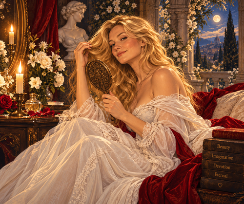

These words unspoken are a dedicated,
impulsive devotion for my fair Lady
and are presented with heartfelt,
deep, caring and adoring emotions,
And with this simple verse,
all I wish to do is converse a passion,
with rhyme which has purpose to fuse our bond of love
and to create a sexual and spiritual loving union,
At any rate,
given we will melt easily in each others hands
and romantic plans,
with promise that we may copulate hard,
fast with no reservation or resistance any more,
Just we both know it is an event which is meant to be,
and would be a sweet,
delight for both you and me,
and we will soon be ready to face the score,
that tally of consequences and responsibilities,
which in cold light of day we will both measure up to gladly, for sure
With sole intent to ignite my Lady’s affectionate, bare, wholesome core
and ensure an awakened comely encounter,
from my sparring,
playful wench and to kindle your embers of adulation for me
and provoke tender, poignant, doting, recurrent responses,
With symmetry and parity do we now weave in each others divine madness and sadness,
and doing our best to promote each others happiness and gladness,
In a peaceful, sublime moment do I wish to say quietly, softly, carefully whispered,
slowly wrapped in a luscious,
chocolate, warm centred cocoon,
that: “I Love You.”
Which will, I hope, resonate gently around your fairy ears
and slip with silvery tongued stealth down your throat,
erupting (in a tiny minor inner gloat on my part) into you heart
and mind the feeling of worship: held truly, madly deeply by another,
While these feelings cascade like exploding supernova’s spurting white,
incandescent, hues which wrap your body
and soul into milky, honeyed dew of waved sensations,
Promoting carnal dances (he silently prays and hopes) which you are compelled to perform, naked, for me,
and your love is a high tide, always lapping away at my sandy toes for me to be with you,
by your side,
will I wish for a mirrored accomplice who will marry my feelings
and thoughts of true and unconditional love;
will you my dear?
And with an overwhelm of tsunami feelings,
which break fall on your being’s shore line,
leaving your wits whet for more
and moist warmth motions within your sensitive silky, velvet rosy home,
ensuring your needy compulsion for my earthy touches and fingertip caresses,
which will fervently kiss away on your luxurious soft, white skin.
The feeling of love, so reciprocated, hits me behind the eyes
and drops my mind into a cushioned embrace of love,
held in a silvery moon of mercury muses,
and feathered baby angels,
who jostle
and murmur a party of syrupy pleasing condolences,
While my eyes proceed to fill with tears of melancholy and affection,
and as these tears begin to well
and so dwell on my tummy with a glowing surge of cosy warmth,
which first moves up to my crimson heart
and then down to my ardent mans pride
and joy which knows no place like home,
other than your silky,
velvet rosy coy heaven.